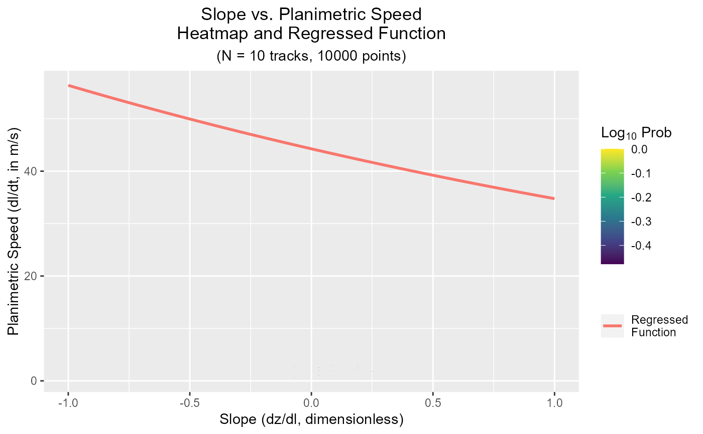

plotVelocity.RdPlot the log-probability of the observed velocity data points versus the regressed nonlinear quantile regression
plotVelocity(
velocity,
v_lim = 3,
v_min = 0,
slope_lim = 1,
bins = 100,
x.bins = bins,
y.bins = bins
)The list output to getVelocity.
The maximum velocities to plot (y-axis limit). Default is 3 m/s.
The minimum velocities to plot (y-axis limit). Default is 0.
Into how many bins are the axes divided?
Into how many bins are the axes divided?
Into how many bins are the axes divided?
The maximum slopes to plot (x-axis limits). Default is 1.
A ggplot object
# Note that the output results should be senseless since they
# are computed on random data
# If the data contains an 'elevation' or 'z' column
data <- data.table(x = runif(10000,10000,20000),
y = runif(10000,30000,40000),
elevation = runif(10000,0,200),
dt = 120,
ID = rep(1:10,each=1000))
velocity <- getVelocity(data = data, z = 'elevation')
plotVelocity(velocity)
